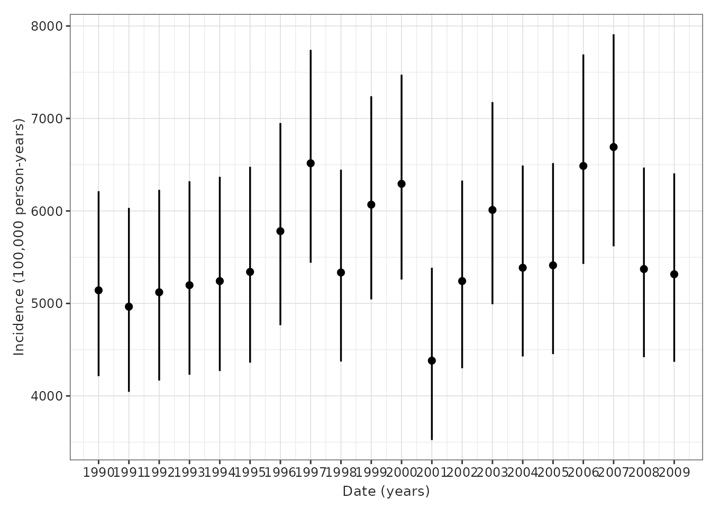
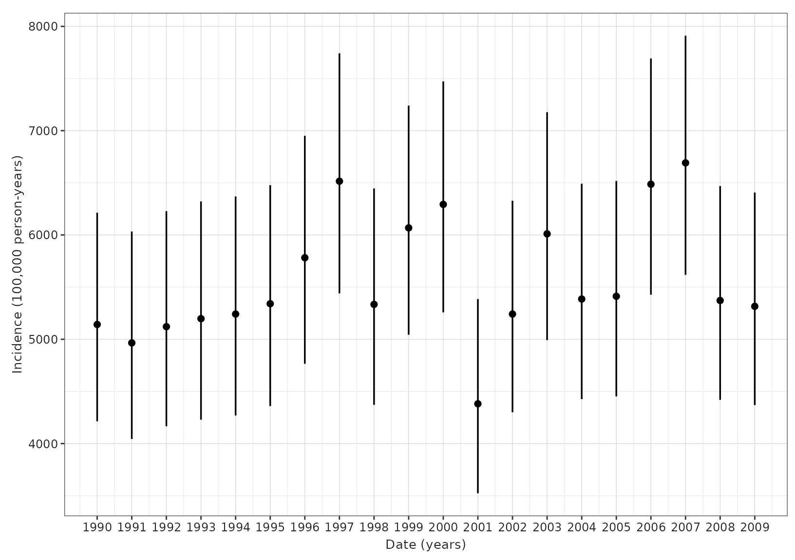
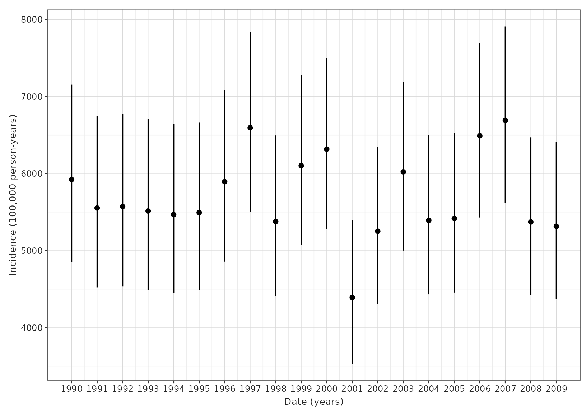
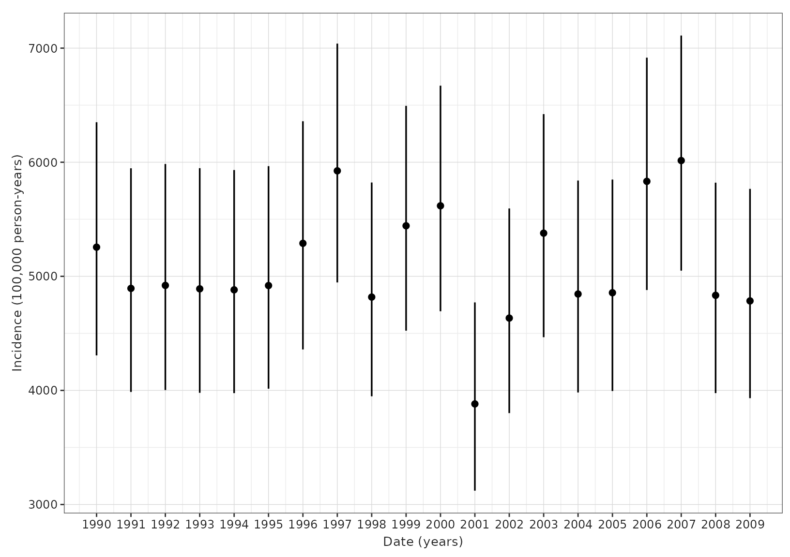
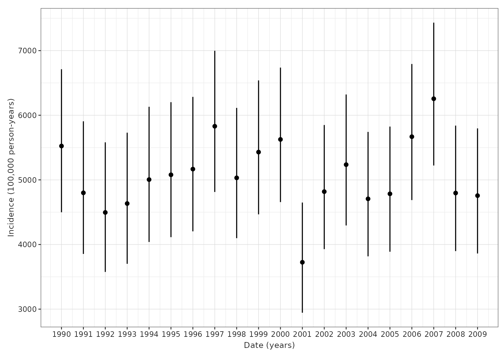
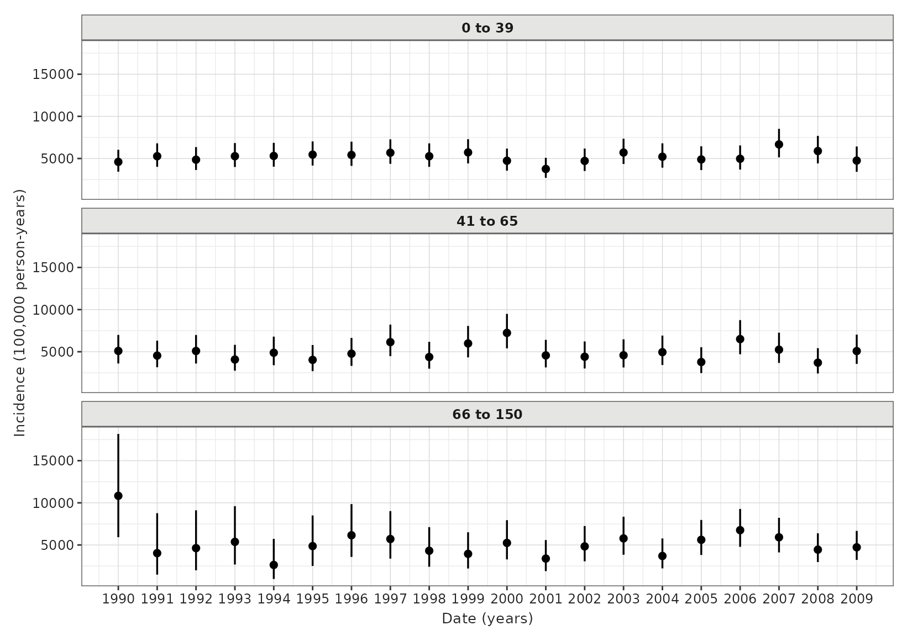
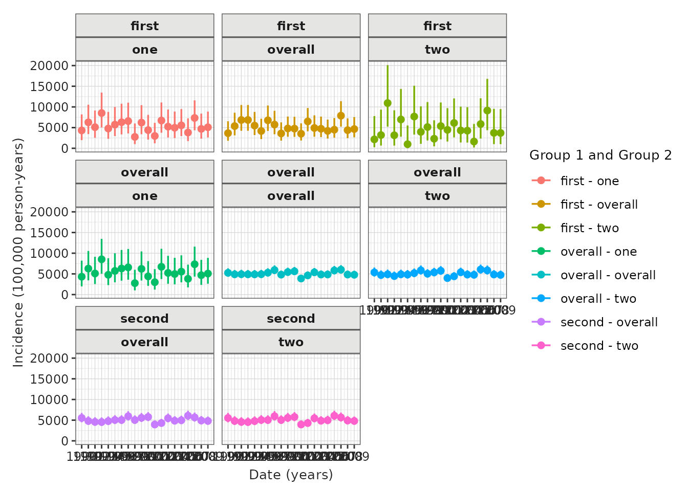

Calculating incidence
a05_Calculating_incidence.RmdIntroduction
Incidence rates describe the rate at which new events occur in a population, with the denominator the person-time at risk of the event during this period. In the previous vignettes we have seen how we can identify a set of denominator and outcome cohorts. Incidence rates can then be calculated using time contributed from these denominator cohorts up to their entry into an outcome cohort.
There are a number of options to consider when calculating incidence rates. This package accommodates two main parameters, including:
- Outcome washout: The number of days used for a ‘washout’ period between the end of one outcome ending and an individual starting to contribute time at risk again.
- Repeated events: Whether individuals are able to contribute multiple events during the study period or if they will only contribute time up to their first event during the study period.
No washout, no repetitive events
In this example there is no outcome washout specified and repetitive
events are not allowed, so individuals contribute time up to their first
event during the study period.

Washout all history, no repetitive events
In this example the outcome washout is all history and repetitive events are not allowed. As before individuals contribute time up to their first event during the study period, but having an outcome prior to the study period (such as person “3”) means that no time at risk is contributed.

Some washout, no repetitive events
In this example there is some amount of outcome washout and repetitive events are not allowed. As before individuals contribute time up to their first event during the study period, but having an outcome prior to the study period (such as person “3”) means that time at risk is only contributed once sufficient time has passed for the outcome washout criteria to have been satisfied.

Outcome definition
Outcome cohorts are defined externally. When creating outcome cohorts for estimating incidence, the most important recommendations for defining an outcome cohort for calculating incidence are:
- Do not restrict outcome cohorts to first events only. This will impact the ability to exclude participants (as they can be excluded based on the prior latest event) and to capture more than one event per person (which is an option allowed in the package).
- Set an appropriate cohort exit strategy. If we want to consider multiple events per person, the duration of these events will be of importance, as we are not going to capture subsequent events if prior events have not yet been concluded. In addition, outcome washouts will be implemented relative to cohort exit from any previous event.
- Do not add further restrictions on sex, age and prior history
requirements. These can be specified when identifying the denominator
population with the
generateDenominatorCohortSet()function.
Using estimateIncidence()
estimateIncidence() is the function we use to estimate
incidence rates. To demonstrate its use, let´s load the
IncidencePrevalence package (along with a couple of packages to help for
subsequent plots) and generate 20,000 example patients using the
mockIncidencePrevalence() function, from whom we´ll create
a denominator population without adding any restrictions other than a
study period. In this example we’ll use permanent tables (rather than
temporary tables which would be used by default).
library(IncidencePrevalence)
library(dplyr)
library(tidyr)
library(ggplot2)
library(patchwork)
cdm <- mockIncidencePrevalence(
sampleSize = 20000,
earliestObservationStartDate = as.Date("1960-01-01"),
minOutcomeDays = 365,
outPre = 0.3
)
cdm <- generateDenominatorCohortSet(
cdm = cdm, name = "denominator",
cohortDateRange = c(as.Date("1990-01-01"), as.Date("2009-12-31")),
ageGroup = list(c(0, 150)),
sex = "Both",
daysPriorObservation = 0
)
cdm$denominator %>%
glimpse()
#> Rows: ??
#> Columns: 4
#> Database: DuckDB v1.1.3 [unknown@Linux 6.8.0-1021-azure:R 4.4.2/:memory:]
#> $ cohort_definition_id <int> 1, 1, 1, 1, 1, 1, 1, 1, 1, 1, 1, 1, 1, 1, 1, 1, 1…
#> $ subject_id <int> 1, 3, 10, 12, 14, 16, 18, 19, 20, 22, 23, 25, 27,…
#> $ cohort_start_date <date> 1991-08-05, 2007-02-16, 2009-04-21, 1992-01-28, …
#> $ cohort_end_date <date> 1996-01-10, 2007-12-09, 2009-12-31, 1999-08-18, …Let´s first calculate incidence rates on a yearly basis, without allowing repetitive events
inc <- estimateIncidence(
cdm = cdm,
denominatorTable = "denominator",
outcomeTable = "outcome",
interval = "years",
outcomeWashout = 0,
repeatedEvents = FALSE
)
inc %>%
glimpse()
#> Rows: 184
#> Columns: 13
#> $ result_id <int> 1, 1, 1, 1, 1, 1, 1, 1, 1, 1, 1, 1, 1, 1, 1, 1, 1, 1,…
#> $ cdm_name <chr> "mock", "mock", "mock", "mock", "mock", "mock", "mock…
#> $ group_name <chr> "denominator_cohort_name &&& outcome_cohort_name", "d…
#> $ group_level <chr> "denominator_cohort_1 &&& cohort_1", "denominator_coh…
#> $ strata_name <chr> "overall", "overall", "overall", "overall", "overall"…
#> $ strata_level <chr> "overall", "overall", "overall", "overall", "overall"…
#> $ variable_name <chr> "Denominator", "Outcome", "Denominator", "Denominator…
#> $ variable_level <chr> NA, NA, NA, NA, NA, NA, NA, NA, NA, NA, NA, NA, NA, N…
#> $ estimate_name <chr> "denominator_count", "outcome_count", "person_days", …
#> $ estimate_type <chr> "integer", "integer", "numeric", "numeric", "numeric"…
#> $ estimate_value <chr> "2517", "107", "760044", "2080.887", "5142.038", "421…
#> $ additional_name <chr> "incidence_start_date &&& incidence_end_date &&& anal…
#> $ additional_level <chr> "1990-01-01 &&& 1990-12-31 &&& years", "1990-01-01 &&…
plotIncidence(inc)
As well as plotting our prevalence estimates, we can also plot the population for whom these were calculated. Here we´ll plot outcome and population counts together.
outcome_plot <- plotIncidencePopulation(result = inc, y = "outcome_count") +
xlab("") +
theme(axis.text.x = element_blank()) +
ggtitle("a) Number of outcomes by year")
denominator_plot <- plotIncidencePopulation(result = inc) +
ggtitle("b) Number of people in denominator population by year")
pys_plot <- plotIncidencePopulation(result = inc, y = "person_years") +
ggtitle("c) Person-years contributed by year")
outcome_plot / denominator_plot / pys_plot
Now with a washout of all prior history while still not allowing
repetitive events. Here we use Inf to specify that we will
use a washout of all prior history for an individual.
inc <- estimateIncidence(
cdm = cdm,
denominatorTable = "denominator",
outcomeTable = "outcome",
interval = "years",
outcomeWashout = Inf,
repeatedEvents = FALSE
)
inc %>%
glimpse()
#> Rows: 184
#> Columns: 13
#> $ result_id <int> 1, 1, 1, 1, 1, 1, 1, 1, 1, 1, 1, 1, 1, 1, 1, 1, 1, 1,…
#> $ cdm_name <chr> "mock", "mock", "mock", "mock", "mock", "mock", "mock…
#> $ group_name <chr> "denominator_cohort_name &&& outcome_cohort_name", "d…
#> $ group_level <chr> "denominator_cohort_1 &&& cohort_1", "denominator_coh…
#> $ strata_name <chr> "overall", "overall", "overall", "overall", "overall"…
#> $ strata_level <chr> "overall", "overall", "overall", "overall", "overall"…
#> $ variable_name <chr> "Denominator", "Outcome", "Denominator", "Denominator…
#> $ variable_level <chr> NA, NA, NA, NA, NA, NA, NA, NA, NA, NA, NA, NA, NA, N…
#> $ estimate_name <chr> "denominator_count", "outcome_count", "person_days", …
#> $ estimate_type <chr> "integer", "integer", "numeric", "numeric", "numeric"…
#> $ estimate_value <chr> "2168", "107", "659947", "1806.836", "5921.954", "485…
#> $ additional_name <chr> "incidence_start_date &&& incidence_end_date &&& anal…
#> $ additional_level <chr> "1990-01-01 &&& 1990-12-31 &&& years", "1990-01-01 &&…
plotIncidence(inc)
Now we´ll set the washout to 180 days while still not allowing repetitive events
inc <- estimateIncidence(
cdm = cdm,
denominatorTable = "denominator",
outcomeTable = "outcome",
interval = "years",
outcomeWashout = 180,
repeatedEvents = FALSE
)
inc %>%
glimpse()
#> Rows: 184
#> Columns: 13
#> $ result_id <int> 1, 1, 1, 1, 1, 1, 1, 1, 1, 1, 1, 1, 1, 1, 1, 1, 1, 1,…
#> $ cdm_name <chr> "mock", "mock", "mock", "mock", "mock", "mock", "mock…
#> $ group_name <chr> "denominator_cohort_name &&& outcome_cohort_name", "d…
#> $ group_level <chr> "denominator_cohort_1 &&& cohort_1", "denominator_coh…
#> $ strata_name <chr> "overall", "overall", "overall", "overall", "overall"…
#> $ strata_level <chr> "overall", "overall", "overall", "overall", "overall"…
#> $ variable_name <chr> "Denominator", "Outcome", "Denominator", "Denominator…
#> $ variable_level <chr> NA, NA, NA, NA, NA, NA, NA, NA, NA, NA, NA, NA, NA, N…
#> $ estimate_name <chr> "denominator_count", "outcome_count", "person_days", …
#> $ estimate_type <chr> "integer", "integer", "numeric", "numeric", "numeric"…
#> $ estimate_value <chr> "2491", "107", "743647", "2035.995", "5255.416", "430…
#> $ additional_name <chr> "incidence_start_date &&& incidence_end_date &&& anal…
#> $ additional_level <chr> "1990-01-01 &&& 1990-12-31 &&& years", "1990-01-01 &&…
plotIncidence(inc)
And finally we´ll set the washout to 180 days and allow repetitive events
inc <- estimateIncidence(
cdm = cdm,
denominatorTable = "denominator",
outcomeTable = "outcome",
interval = "years",
outcomeWashout = 180,
repeatedEvents = TRUE
)
inc %>%
glimpse()
#> Rows: 184
#> Columns: 13
#> $ result_id <int> 1, 1, 1, 1, 1, 1, 1, 1, 1, 1, 1, 1, 1, 1, 1, 1, 1, 1,…
#> $ cdm_name <chr> "mock", "mock", "mock", "mock", "mock", "mock", "mock…
#> $ group_name <chr> "denominator_cohort_name &&& outcome_cohort_name", "d…
#> $ group_level <chr> "denominator_cohort_1 &&& cohort_1", "denominator_coh…
#> $ strata_name <chr> "overall", "overall", "overall", "overall", "overall"…
#> $ strata_level <chr> "overall", "overall", "overall", "overall", "overall"…
#> $ variable_name <chr> "Denominator", "Outcome", "Denominator", "Denominator…
#> $ variable_level <chr> NA, NA, NA, NA, NA, NA, NA, NA, NA, NA, NA, NA, NA, N…
#> $ estimate_name <chr> "denominator_count", "outcome_count", "person_days", …
#> $ estimate_type <chr> "integer", "integer", "numeric", "numeric", "numeric"…
#> $ estimate_value <chr> "2491", "107", "743647", "2035.995", "5255.416", "430…
#> $ additional_name <chr> "incidence_start_date &&& incidence_end_date &&& anal…
#> $ additional_level <chr> "1990-01-01 &&& 1990-12-31 &&& years", "1990-01-01 &&…
plotIncidence(inc)
Stratified analyses
As with prevalence. if we specified multiple denominator populations results will be returned for each. Here for example we define three age groups for denominator populations and get three sets of estimates back when estimating incidence
cdm <- generateDenominatorCohortSet(
cdm = cdm, name = "denominator_age_sex",
cohortDateRange = c(as.Date("1990-01-01"), as.Date("2009-12-31")),
ageGroup = list(
c(0, 39),
c(41, 65),
c(66, 150)
),
sex = "Both",
daysPriorObservation = 0
)
inc <- estimateIncidence(
cdm = cdm,
denominatorTable = "denominator_age_sex",
outcomeTable = "outcome",
interval = "years",
outcomeWashout = 180,
repeatedEvents = TRUE
)
plotIncidence(inc, facet = "denominator_age_group")
We can also plot person years by year for each strata.
pys_plot <- plotIncidencePopulation(result = inc, y = "person_years")
pys_plot +
facet_wrap(vars(denominator_age_group), ncol = 1)
And again, as with prevalence while we specify time-varying stratifications when defining our denominator populations, if we have time-invariant stratifications we can include these at the the estimation stage.
cdm$denominator <- cdm$denominator %>%
mutate(group = if_else(as.numeric(subject_id) < 3000, "first", "second"))
inc <- estimateIncidence(
cdm = cdm,
denominatorTable = "denominator",
outcomeTable = "outcome",
strata = list("group"),
outcomeWashout = 180,
repeatedEvents = TRUE
)
plotIncidence(inc,
facet = "group",
colour = "group"
)
cdm$denominator <- cdm$denominator %>%
mutate(
group_1 = if_else(as.numeric(subject_id) < 3000, "first", "second"),
group_2 = if_else(as.numeric(subject_id) < 2000, "one", "two")
)
inc <- estimateIncidence(
cdm = cdm,
denominatorTable = "denominator",
outcomeTable = "outcome",
strata = list(
c("group_1"), # for just group_1
c("group_2"), # for just group_2
c("group_1", "group_2")
), # for group_1 and group_2
outcomeWashout = 180,
repeatedEvents = TRUE
)
plotIncidence(inc,
facet = c("group_1", "group_2"),
colour = c("group_1", "group_2")
)
Other parameters
In the examples above, we have used calculated incidence rates by months and years, but it can be also calculated by weeks, months, quarters, or for the entire study time period. In addition, we can decide whether to include time intervals that are not fully captured in the database (e.g., having data up to June for the last study year when computing yearly incidence rates). By default, incidence will only be estimated for those intervals where the denominator cohort captures all the interval (completeDatabaseIntervals=TRUE).
Given that we can set estimateIncidence() to exclude
individuals based on other parameters (e.g., outcomeWashout), it is
important to note that the denominator population used to compute
incidence rates might differ from the one calculated with
generateDenominatorCohortSet(). 95 % confidence intervals
are calculated using the exact method.
inc <- estimateIncidence(
cdm = cdm,
denominatorTable = "denominator",
outcomeTable = "outcome",
interval = c("weeks"),
completeDatabaseIntervals = FALSE,
outcomeWashout = 180,
repeatedEvents = TRUE
)
#> ℹ Getting incidence for analysis 1 of 1
#> ✔ Overall time taken: 0 mins and 10 secsAnalysis attrition
As with our prevalence results, we can also view the attrition associate with estimating incidence.
inc <- estimateIncidence(
cdm = cdm,
denominatorTable = "denominator",
outcomeTable = "outcome",
interval = c("Years"),
outcomeWashout = 180,
repeatedEvents = TRUE
)
tableIncidenceAttrition(inc)| Reason |
Variable name
|
|||
|---|---|---|---|---|
| Number records | Number subjects | Excluded records | Excluded subjects | |
| mock; cohort_1 | ||||
| Starting population | 20,000 | 20,000 | - | - |
| Missing year of birth | 20,000 | 20,000 | 0 | 0 |
| Missing sex | 20,000 | 20,000 | 0 | 0 |
| Cannot satisfy age criteria during the study period based on year of birth | 20,000 | 20,000 | 0 | 0 |
| No observation time available during study period | 10,399 | 10,399 | 9,601 | 9,601 |
| Doesn't satisfy age criteria during the study period | 10,399 | 10,399 | 0 | 0 |
| Prior history requirement not fulfilled during study period | 10,399 | 10,399 | 0 | 0 |
| No observation time available after applying age, prior observation and, if applicable, target criteria | 10,149 | 10,149 | 250 | 250 |
| Starting analysis population | 10,149 | 10,149 | - | - |
| Apply washout criteria of 180 days (note, additional records may be created for those with an outcome) | 11,583 | 10,132 | -1,434 | 17 |
| Not observed during the complete database interval | 11,583 | 10,132 | 0 | 0 |